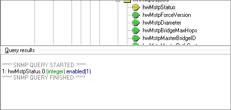
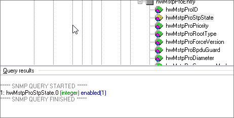
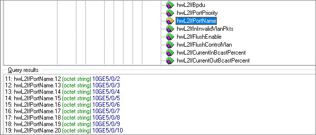
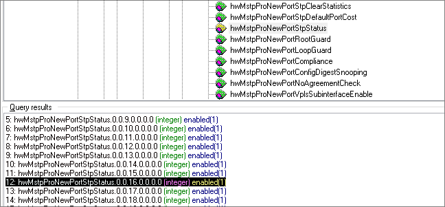

hwMstpStatus describes whether STP is enabled globally. It describes whether STP is enabled in process 0 when there are multiple processes.
hwMstpProTable describes MSTP process information, including the enabling status, priority, and root bridge type. You can use hwMstpProStpState in hwMstpProTable to obtain the STP enabling status of all processes.
Object |
OID |
|---|---|
hwMstpStatus |
1.3.6.1.4.1.2011.5.25.42.4.1.1 |
hwMstpProStpState |
1.3.6.1.4.1.2011.5.25.42.4.1.23.1.4 |
hwMstpProNewPortStpStatus |
1.3.6.1.4.1.2011.5.25.42.4.1.29.1.22 |



